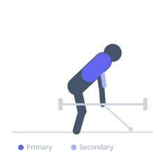
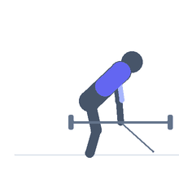

Exercise guide / Meadows Row
Meadows Row
The Meadows row is a unilateral landmine row variation where one end of a barbell is fixed in a corner or landmine attachment and the lifter rows the loaded end with one hand using a neutral, staggered grip. The unique angled line of pull emphasizes the outer portion of the latissimus dorsi and teres major more than horizontal cable rows, while also loading the upper back through scapular retraction.
Primary muscles
latissimus dorsi
rhomboid major
Secondary muscles
teres major
trapezius middle
brachialis
Stabilizers
erector spinae
transverse abdominis
Equipment
Standard Barbell
Optional
T-Bar Row


Starting position
- Wedge one end of a barbell into a corner or landmine attachment. Load the other end with plates. Stand perpendicular to the bar and stagger the feet (lead foot on the same side as the working arm). Hinge at the hips to approximately 45 degrees and grasp the end of the bar with one hand.
Setup
- Secure the barbell in a landmine unit or corner. Keep a collar on the loaded end. Stand close enough that the bar end is at approximately knee height when hinged. Use chalk or a towel for grip on the smooth end of the bar if needed.
Steps
- Step 1: Hinge at the hips and grasp the bar end with the working arm extended toward the floor, allowing the lat to stretch.
- Step 2: Drive the elbow up and back, retracting the scapula as you row the bar toward the hip or lower ribcage.
- Step 3: At the top, the elbow should be above the level of the torso and the shoulder blade fully retracted.
- Step 4: Lower the bar under control back to the starting position, fully extending the arm.
- Step 5: Complete all reps on one side before switching.
Coaching cues
- Flare the elbow out slightly compared to a normal row
- Drive the elbow toward the ceiling, not behind you
- Let the shoulder blade travel away from the spine at the bottom of each rep
Breathing
- Exhale forcefully as you row the bar up. Inhale as you lower it.
Range of motion
- Full arm extension at the start to elbow above torso level at the top. Maximize scapular excursion.
Tempo
- 1-1-2-0 (1s pull, 1s hold, 2s eccentric)
Common mistakes
- Allowing the torso to rotate excessively — it should be relatively stable
- Pulling toward the chest rather than the hip, losing lat emphasis
- Using too much momentum from the lower body to initiate the row
Safety
- Ensure the barbell is securely wedged to prevent slipping during the movement
- Maintain a braced core and neutral spine throughout — the hip hinge position taxes the lower back
Training
- strength: 5–8 reps
- hypertrophy: 8–12 reps
- strength: 4–5 sets
- hypertrophy: 3–4 sets
- Rest: {'strength': 150, 'hypertrophy': 90}